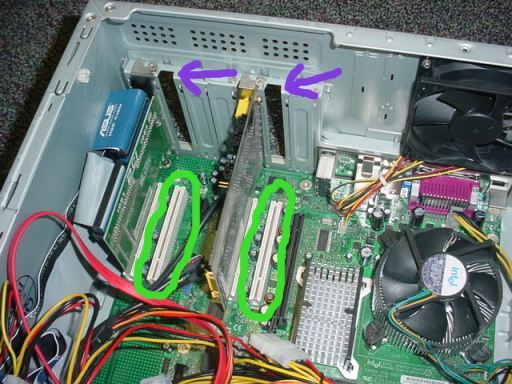
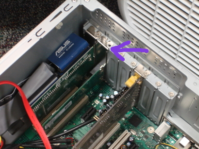
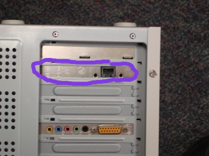

Prepare Your Computer
Install Network Cards
In order to use your computer as a router, you must have more than one
network card (also known as a NIC which stands for Network Interface
Controller). If you are setting up a wired network you will need at least 2
network cards and if you are setting up a wired and wireless network you will need at least 3 network cards. If your computer already has the right amount of network cards you can skip this section and move on to downloading IPCop. Generally your computer comes with one built-in network card and multiple expansion slots to add other cards of any kind. You can add as many network cards as you have room for if you like, but we will just cover adding one for a wired network and adding two for a wired / wireless netowrk.
- Open up your computer (you might need to take out some screws to do this).
- Locate the expansion slots for adding network cards and take out the blank plate covering the empty slot.

- Take an available network card and carefully slide it into the empty expansion slot. The face with the Ethernet port should lie flush with where you took out the blank plate. If you are using a wireless network also, you must add another network card the same way you added the first.

- Close up your computer (put any screws back you had to take out).

Download IPCop
IPCop is it's own operating system, which means in order to install it you
must download the ISO file from the IPCop website and burn it to a CD. Once this is done, you restart your computer and boot off the CD to run the installation process. This section will cover downloading and burning the ISO image.
- Go to the IPCop website.
- Click on the "Download" tab at the top of the page. This will take you to
the project's page on sourceforge.net.
- In the "Latest File Releases" section click the "Download" link at the end of the row for the IPCop package (this should be the first row in the table).
- Save the file to a location that you will remember. It may take some
time to download the file depending on your connection speed.
- Once the download finishes, open up whatever CD-burning software you use
(Note: your software must support burning ISO files to CDs). Insert a blank CD-R into your CD-ROM drive.
- Select the "Burn To ISO" tool of your CD-burning software and select the IPCop ISO file you just downloaded to burn to the CD-R you just inserted into your computer.
- Once the software finishes burning you are ready to move on to the
installation instructions in the next lesson.